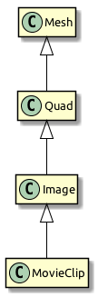
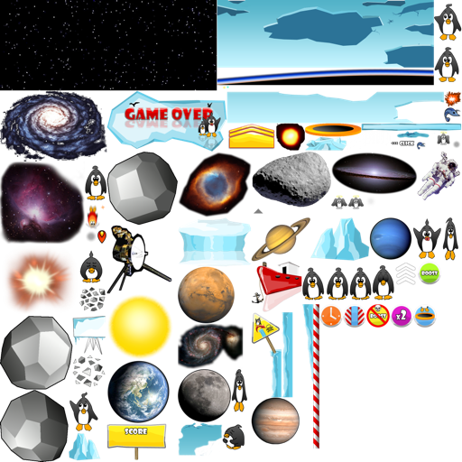

class Texture
{
static function fromColor():Texture;
static function fromBitmap():Texture;
static function fromBitmapData():Texture;
static function fromEmbeddedAsset():Texture;
static function fromCamera():Texture;
static function fromNetStream():Texture;
static function fromTexture():Texture;
}Textures & Images
We came across the Image and Texture classes several times already; they are some of the most useful classes in Starling. But how are they used, and what’s the difference between the two?
Textures
A texture is just the data that describes an image — like the file that is saved on your digital camera. You can’t show anybody that file alone: it’s all zeros and ones, after all. You need an image viewer to look at it, or send it to a printer.
Textures are stored directly in GPU memory, which means that they can be accessed very efficiently during rendering. They are typically either created from an asset, loaded from a URL, or read from the file system. You can pick between one of the following file formats:
- PNG
-
The most versatile of them all. Its lossless compression works especially well for images with large areas of solid color. Recommended as default texture format.
- JPG
-
Produces smaller files than PNG for photographic (and photo-like) images, thanks to it lossy encoding method. However, the lack of an alpha channel limits its usefulness severely. Recommended only for photos and big background images.
- ATF
-
A format created especially for Stage3D. ATF textures require little texture memory and load very fast; however, their lossy compression is not perfectly suited for all kinds of images. We will look at ATF textures in more detail in a later chapter (see ATF Textures).
The starling.textures.Texture class contains a number of factory methods used to instantiate textures.
Here are few of them (for clarity, I omitted the arguments).
Probably the most common task is to create a texture from bitmap data. That couldn’t be easier:
var bmd:BitmapData = getBitmapData();
var texture:Texture = Texture.fromBitmapData(bmd);It’s also very common to create a texture from an asset. That can be done in just the same way:
var bmd:BitmapData = Assets.getBitmapData("assets/mushroom.png"); (1)
var texture:Texture = Texture.fromBitmapData(bmd); (2)| 1 | The asset is defined in project.xml: <assets path="assets/mushroom.png"/> |
| 2 | Create a texture from the bitmap data. |
Another feature of the Texture class is hidden in the inconspicuous fromTexture method.
It allows you to set up a texture that points to an area within another texture.
What makes this so useful is the fact that no pixels are copied in this process. Instead, the created SubTexture stores just a reference to its parent texture. That’s extremely efficient!
var texture:Texture = getTexture();
var subTexture:Texture = Texture.fromTexture(
texture, new Rectangle(10, 10, 41, 47));Shortly, you will get to know the TextureAtlas class; it’s basically built exactly around this feature.
Images
We’ve got a couple of textures now, but we still don’t know how to display it on the screen. The easiest way to do that is by using the Image class or one of its cousins.
Let’s zoom in on that part of the family tree.

-
A Mesh is a flat collection of triangles (remember, the GPU can only draw triangles).
-
A Quad is a collection of at least two triangles spawning up a rectangle.
-
An Image is just a quad with a convenient constructor and a few additional methods.
-
A MovieClip is an image that switches textures over time.
While all of these classes are equipped to handle textures, you will probably work with the Image class most often. That’s simply because rectangular textures are the most common, and the Image class is the most convenient way to work with them.
To demonstrate, let me show you how to display a texture with a Quad vs. an Image.
var texture:Texture = Texture.fromBitmapData(/* ... */);
var quad:Quad = new Quad(texture.width, texture.height); (1)
quad.texture = texture;
addChild(quad);
var image:Image = new Image(texture); (2)
addChild(image);| 1 | Create a quad with the appropriate size and assign the texture, or: |
| 2 | Create an image with its standard constructor. |
Personally, I’d always pick the approach that saves me more keystrokes. What’s happening behind the scenes is exactly the same in both cases, though.
Figure 1. A texture is mapped onto a quad.
One Texture, multiple Images
It’s important to note that a texture can be mapped to any number of images (meshes). In fact, that’s exactly what you should do: load a texture only once and then reuse it across the lifetime of your application.
// do NOT do this!!
var image1:Image = new Image(Texture.fromBitmapData(bmd));
var image2:Image = new Image(Texture.fromBitmapData(bmd));
var image3:Image = new Image(Texture.fromBitmapData(bmd));
// instead, create the texture once and keep a reference:
var texture:Texture = Texture.fromBitmapData(bmd);
var image1:Image = new Image(texture);
var image2:Image = new Image(texture);
var image3:Image = new Image(texture);Almost all your memory usage will come from textures; you will quickly run out of RAM if you waste texture memory.
Texture Atlases
In all the previous samples, we loaded each texture separately. However, real applications should actually not do that. Here’s why.
-
For efficient GPU rendering, Starling batches the rendered Meshes together. Batch processing is disrupted, however, whenever the texture changes.
-
In some situations, Stage3D requires textures to have a width and height that are powers of two. Starling hides this limitation from you, but you will nevertheless use more memory if you do not follow that rule.
By using a texture atlas, you avoid both the texture switches and the power-of-two limitation. All textures are within one big "super-texture", and Starling takes care that the correct part of this texture is displayed.

Figure 2. A texture atlas.
The trick is to have Stage3D use this big texture instead of the small ones, and to map only a part of it to each quad that is rendered. This will lead to a very efficient memory usage, wasting as little space as possible. (Some other frameworks call this feature Sprite Sheets.)
| The team from "Texture Packer" actually created a nice introduction video about sprite sheets. Watch it here: What is a Sprite Sheet? |
Creating the Atlas
The positions of each SubTexture are defined in an XML file like this one:
<TextureAtlas imagePath="atlas.png">
<SubTexture name="moon" x="0" y="0" width="30" height="30"/>;
<SubTexture name="jupiter" x="30" y="0" width="65" height="78"/>;
...
</TextureAtlas>;As you can see, the XML references one big texture and defines multiple named SubTextures, each pointing to an area within that texture. At runtime, you can reference these SubTextures by their name and they will act just as if they were independent textures.
But how do you combine all your textures into such an atlas? Thankfully, you don’t have to do that manually; there are lots of tools around that will help you with that task. Here are two candidates, but Google will bring up many more.
-
TexturePacker is my personal favorite. You won’t find any tool that allows for so much control over your sprite sheets, and its Starling support is excellent (ATF textures, anyone?).
-
Shoebox is a free tool built with AIR. While it doesn’t have as many options for atlas creation as TexturePacker, it contains lots of related functionality, like bitmap font creation or sprite extraction.
Using the Atlas
Okay: you’ve got a texture atlas now. But how do you use it? Let’s start with embedding the texture and XML data.
<assets path="assets/atlas.xml"/> (1)
<assets path="assets/atlas.png"/> (2)| 1 | Add the atlas XML as an asset. |
| 2 | Add the atlas texture as an asset. |
| Alternatively, you can also load these files from an URL or from the disk (if we are talking about native targets). We will look at that in detail when we discuss Starling’s AssetManager. |
With those two objects available, we can create a new TextureAtlas instance and access all SubTextures through the method getTexture().
Create the atlas object once when the game is initialized and reference it throughout its lifetime.
var bitmapData:BitmapData = Assets.getBitmapData("assets/atlas.png");
var texture:Texture = Texture.fromBitmapData(bitmapData); (1)
var xmlString:String = Assets.getText("assets/atlas.xml");
var xml:Xml = Xml.parse(xmlString);
var atlas:TextureAtlas = new TextureAtlas(texture, xml);
var moonTexture:Texture = atlas.getTexture("moon"); (2)
var moonImage:Image = new Image(moonTexture);| 1 | Create the atlas. |
| 2 | Display a SubTexture. |
It’s as simple as that!
Render Textures
The RenderTexture class allows creating textures dynamically. Think of it as a canvas on which you can paint any display object.
After creating a render texture, just call the drawObject method to render an object directly onto the texture.
The object will be drawn onto the texture at its current position, adhering its current rotation, scale and alpha properties.
var renderTexture:RenderTexture = new RenderTexture(512, 512); (1)
var brush:Sprite = getBrush(); (2)
brush.x = 40;
brush.y = 120;
brush.rotation = 1.41;
renderTexture.draw(brush); (3)| 1 | Create a new RenderTexture with the given size (in points). It will be initialized with fully transparent pixels. |
| 2 | In this sample, we’re referencing a display object depicting a brush. We move it to a certain location. |
| 3 | The brush object will be drawn to the texture with its current position and orientation settings. |
Drawing is done very efficiently, as it is happening directly in graphics memory. After you have drawn objects onto the texture, the performance will be just like that of a normal texture — no matter how many objects you have drawn.
var image:Image = new Image(renderTexture);
addChild(image); (1)| 1 | The texture can be used like any other texture. |
If you draw lots of objects at once, it is recommended to bundle the drawing calls in a block via the drawBundled method, as shown below.
This allows Starling to skip a few rather costly operations, speeding up the process immensely.
renderTexture.drawBundled(function():Void (1)
{
for (i in 0...numDrawings)
{
image.rotation = (2 * Math.PI / numDrawings) * i;
renderTexture.draw(image); (2)
}
});| 1 | Activate bundled drawing by encapsulating all draw-calls in a function. |
| 2 | Inside the function, call draw just like before. |
You can use any display object like an eraser by setting its blend mode to BlendMode.ERASE.
That way, you can selectively remove parts of the texture.
brush.blendMode = BlendMode.ERASE;
renderTexture.draw(brush);To wipe it completely clean, use the clear method.
|
Context Loss
Unfortunately, render textures have one big disadvantage: they lose all their contents when the render context is lost. Context Loss is discussed in detail in a later chapter; in a nutshell, it means that Stage3D may lose the contents of all its buffers in certain situations. (Yes, that is as nasty as it sounds.) Thus, if it is really important that the texture’s contents is persistent (i.e. it’s not just eye candy), you will need to make some arrangements. We will look into possible strategies in the mentioned chapter — I just wanted to mention this fact here so it doesn’t hit you by surprise. |